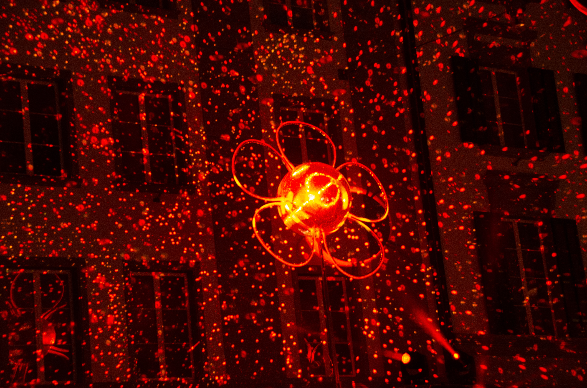

Laser Distance Measure
Developed a laser distance measure which ranges up to 150meters

HTML Web-Page
Developed an fully responsive web-page working as a freelancer
Periscope
Created a periscope which is normally used in submarines for navigating